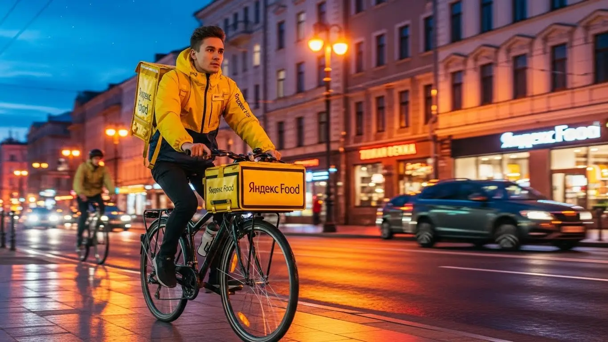
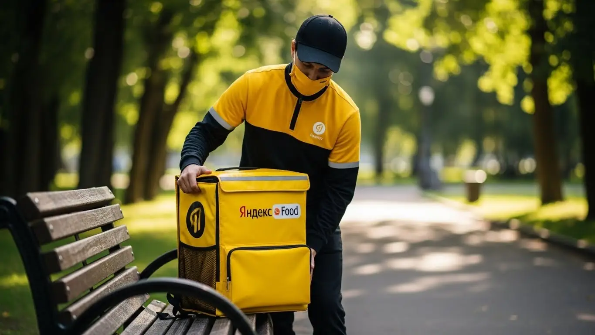
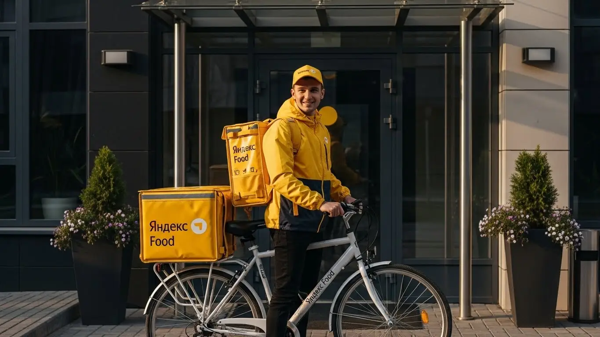
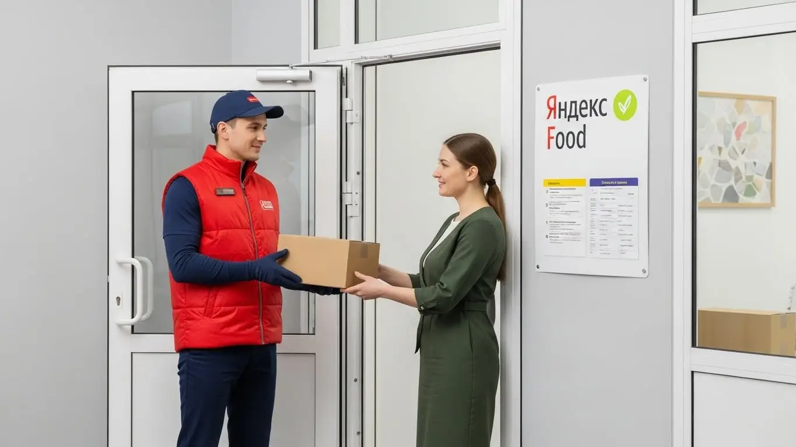
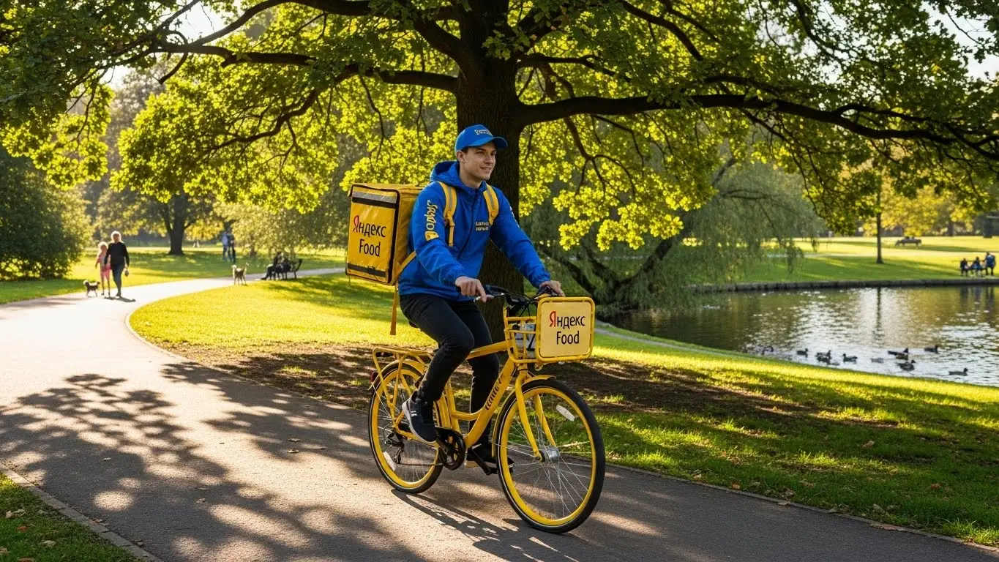

Работа курьером Яндекс Еды в Ессентуках 2025-2026: доход и условия

- Работа курьером Яндекс Еды в Ессентуках: для кого эта вакансия и что вы получите
- Сколько вы будете зарабатывать курьером в Ессентуках: калькулятор дохода и разбор выплат
- Реальный заработок курьера в Ессентуках: смены и месячный доход
- График работы и форматы занятости
- Требования к кандидату и документы
- Самозанятость, налоги и юридическая чистота
- Пошаговое оформление и первый выход на линию в Ессентуках
- Пешком, на вело или на авто: что выгоднее в Ессентуках
- Районы, маршруты и «топовые» зоны заказов в Ессентуках
- Безопасность, страховка, штрафы и оплата простоя
- Плюсы и возможные минусы работы курьером в Ессентуках
- Реальные истории и отзывы курьеров из Ессентуков
- FAQ: Ответы на главные вопросы о работе курьером Яндекс Еды в Ессентуках
- Короткие ответы на главные вопросы
- Итоги и ваш следующий шаг
Все города
Думаешь, работа курьером Яндекс Еда в Ессентуках — это лёгкие деньги на свежем воздухе? Слышал, что можно кататься по городу и зарабатывать по 3-4 тысячи в день? А теперь давай честно: ты готов к тому, что за эти деньги придётся «убить» подвеску своей машины на местных дорогах, стоять в пробках на Интернациональной в час пик или крутить педали в гору под ледяным ветром зимой? Я здесь не для того, чтобы рассказывать сказки из рекламных буклетов, а чтобы дать реальную картину работы в нашем курортном городе, со всеми его плюсами и подводными камнями.
Поверь, большинство новичков в Ессентуках сходят с дистанции в первый же месяц. Почему? Потому что никто им не объяснил, что заявленный доход — это не чистая прибыль. Из него нужно вычесть бензин или ремонт велосипеда, 6% налога для самозанятых и возможные штрафы. Никто не рассказал, что рейтинг решает всё, а получить и удержать его, доставляя заказы из центра в отдалённые микрорайоны, — та ещё задачка. Без понимания местной специфики ты будешь просто терять время и деньги, совершая те же ошибки, что и сотни парней до тебя.
В этом гиде я разложу всё по полочкам. Мы разберём, что выгоднее для работы в Ессентуках — свои ноги, велосипед или авто. Вместе посчитаем, сколько РЕАЛЬНО остаётся в кармане после всех расходов. Я покажу на карте самые «хлебные» районы и мёртвые зоны, где можно прождать заказ часами. Расскажу, как на доход влияет сезонность и погода, за что на самом деле штрафуют и как этого избежать. И, конечно, сравним условия с другими службами доставки, которые есть у нас в городе. А если ты хочешь сразу увидеть краткую сводку условий и подать заявку, вся официальная информация собрана на странице про работу курьером Яндекс Еда в Ессентуках. Никакой воды — только факты и личный опыт.
Меня зовут Алексей. Я сам начинал курьером на своей старенькой «девятке», а сейчас у меня небольшой таксопарк-партнёр, и я вижу всю эту кухню изнутри. Я знаю, в каких ресторанах вечно долгие ожидания, а где можно быстро забрать заказ и лететь на следующий. Я проехал по каждой улице Ессентуков и готов поделиться с тобой всеми фишками и лайфхаками. Так что устраивайся поудобнее, сейчас начнём с самого главного — с денег.
Прежде чем мы углубимся в детали, вот короткий гид по ключевым темам статьи, чтобы ты мог быстро сориентироваться.
Что ты точно узнаешь из этого разбора
В этой статье ты ТОЧНО узнаешь:
- Сколько на самом деле можно заработать в Ессентуках за смену и какой реальный доход в месяц при подработке и полной занятости?
- В каких районах Ессентуков больше всего заказов и как находить «хлебные» места с помощью приложения «Яндекс Про»?
- Что выгоднее для работы в Ессентуках — свои ноги, велосипед или авто, с учётом рельефа и расстояний?
- Как работает самозанятость, сколько налога нужно платить и сложно ли всё это оформить новичку?
- Что такое «оплата простоя», если заказов мало, и за какие ошибки можно получить реальные штрафы?
- Насколько быстро можно начать работать после заполнения анкеты и какие шаги нужно пройти до первого заказа?
А если тебе некогда читать всю статью — переходи сразу к заключению, где ты найдёшь короткие ответы на все эти вопросы и указания, в каких разделах искать подробности.
А чтобы было нагляднее, вот основные цифры по работе в Ессентуках в одной картинке.
Яндекс Еда в Ессентуках: главное в цифрах
Работа курьером Яндекс Еды в Ессентуках: для кого эта вакансия и что вы получите
Скажу прямо: работа курьером — это не для всех, но для многих это отличный вариант. В Ессентуках эта вакансия — реальный шанс зарабатывать без начальника над душой и жёсткого графика. Если тебе нужны деньги здесь и сейчас и ты не хочешь проходить многомесячные стажировки, то это твой вариант. Здесь всё просто: есть ты, смартфон с приложением «Яндекс Про» и город, который хочет есть.
Эта работа — конструктор. Ты сам решаешь, когда и сколько работать. Хочешь — выходишь на пару часов вечером после основной работы или учёбы, чтобы закрыть кредит или накопить на что-то. А хочешь — работаешь полный день и делаешь доставку своей основной профессией. Главное — здесь ценят твоё время и усилия, переводя их в реальные деньги, которые приходят на карту каждый день.

Кому подойдёт эта работа в Ессентуках
По моему опыту, в доставку приходят совершенно разные люди, и для многих она становится идеальным решением. В Ессентуках эта работа особенно хорошо подходит студентам местных колледжей — можно легко совмещать с парами, выходя на линию в обеденный перерыв или вечером. Также это отличный старт для тех, у кого нет опыта работы: здесь не смотрят на диплом и прошлые заслуги, важно только твоё желание работать.
Это и прекрасная подработка для тех, у кого уже есть основная занятость. График полностью свободный, поэтому ты можешь доставлять заказы по выходным или в свои свободные вечера. Водители, которые хотят дополнительно заработать на своём авто, тоже найдут здесь своё место — заказов на машине всегда хватает. В общем, если тебе важны быстрые ежедневные выплаты и гибкие условия, то ты по адресу.
Главные преимущества для жителей районов Курортная зона, Заполотно, Микрорайон Северный
Одно из главных удобств — возможность работать рядом с домом. Тебе не нужно тратить час-полтора на дорогу до офиса и обратно. Живёшь, например, в микрорайоне Северный — можешь брать заказы прямо там, развозя продукты из местных магазинов по соседям. Это экономит и время, и деньги на проезд.
Если твой дом в районе Заполотно, ты находишься в выгодной позиции: рядом и спальные кварталы, и недалеко до центра с его кафе. А для тех, кто живёт в Курортной зоне или рядом с ней, работа есть практически всегда, особенно в сезон. Ты можешь доставлять заказы из ресторанов в санатории и отели, не уезжая далеко от своего района. Приложение «Яндекс Про» позволяет выбирать конкретные зоны для работы, так что ты всегда можешь оставаться на знакомой территории.
Краткое обещание по доходу и условиям
Теперь о главном — о деньгах. В Ессентуках доход активного курьера может составлять от 2000 до 4000 рублей за смену. Если рассматривать это как полную занятость, то месячная зарплата может достигать 70 000 – 85 000 рублей, особенно если ты работаешь на автомобиле и берёшь дальние заказы. Но даже если это просто подработка на несколько часов в день, 20-30 тысяч в месяц к основному доходу — вполне реальная цифра.
Самое приятное — деньги приходят на карту ежедневно. Отработал смену — получил выплату. Никаких ожиданий до зарплаты. При этом от тебя не требуют опыта или специального образования. Основные требования — быть совершеннолетним, иметь смартфон на Android и желание двигаться. Оформление обычно идёт через самозанятость, что позволяет получать деньги напрямую и легально. График ты выстраиваешь сам через приложение, выбирая удобные для себя слоты.
Был у меня парень, студент-медик. Жил в районе Курортного парка. После учёбы выходил на 3-4 часа пешком. Заказов в центре всегда море: из кафе, ресторанов, аптек. Он спокойно делал по 8-10 доставок за вечер, в основном по отелям и гостевым домам. Зарабатывал свои 1200-1500 рублей, которые сразу шли на карту. Говорил, что это идеальный вариант: и физнагрузка после лекций, и карманные деньги каждый день без отрыва от учёбы.
В общем, работа курьером в Ессентуках — это гибкий и доступный способ заработка. Она подходит и для подработки, и для полноценной занятости, а возможность работать в своём районе делает её ещё удобнее. Мой совет: если сомневаешься, просто попробуй выйти на пару коротких смен в знакомом квартале. Ты ничего не теряешь, а понимание, твоё это или нет, придёт очень быстро.
Сколько вы будете зарабатывать курьером в Ессентуках: калькулятор дохода и разбор выплат
Давай разберёмся, как формируется твой заработок, чтобы не было никаких иллюзий и недопонимания. Система абсолютно прозрачна: ты всегда видишь в приложении, за что и сколько тебе начислено. Никаких «серых» схем, всё официально. Твой доход — это не просто ставка за час, а сумма нескольких составляющих, и если понимать, как это работает в Яндекс Еде и Доставке, можно зарабатывать значительно больше.
Главный инструмент для планирования — калькулятор дохода. Это не просто маркетинговая игрушка, а полезная вещь, которая на основе реальной статистики по Ессентукам показывает, на какие цифры ты можешь рассчитывать. Но чтобы им правильно пользоваться и понимать итоговую сумму в приложении, нужно знать, из каких кирпичиков строится твой доход.
Из чего складывается доход курьера
Твой заработок за смену — это сумма нескольких частей. Вот основные из них:
- Оплата за заказ. Это базовая стоимость за то, что ты забрал и доставил посылку. Она фиксирована для каждого заказа.
- Доплата за расстояние. Чем дальше ехать или идти от точки А до точки Б, тем больше денег ты получишь. Система считает каждый километр твоего пути.
- Повышающие коэффициенты. В часы пик (обед, вечер), в плохую погоду (дождь, сильный ветер) или в зонах высокого спроса (например, центр Ессентуков в пятницу вечером) включаются множители. Стоимость заказа может вырасти в 1.5, 2, а то и в 3 раза.
- Бонусы. Сервис часто предлагает персональные цели. Например, выполни 15 заказов за день и получи дополнительно 500 рублей. Это отличный стимул работать активнее.
- Чаевые. Всё, что клиент оставляет в качестве благодарности, — твоё на 100%. Сервис не берёт с чаевых никакой комиссии.
- Оплата простоя. Это ключевое преимущество. Если ты вышел на плановый слот, а заказов мало, тебе всё равно начисляется минимальная оплата за время ожидания. Ты застрахован от ситуаций, когда просидел час без дела и ничего не заработал.
Иногда также возможна компенсация проезда на общественном транспорте, если заказ очень дальний и его неудобно выполнять пешком. Для работы тебе понадобится термокороб или термосумка, чтобы заказы доезжали до клиентов горячими или холодными. Обычно сервис помогает с их получением.
Как пользоваться калькулятором дохода
Калькулятор на сайте — твой первый помощник для оценки потенциального заработка. Пользоваться им элементарно. Сначала ты выбираешь свой город — Ессентуки. Затем указываешь способ доставки: пеший курьер, на велосипеде или на своём авто.
Дальше самое интересное: ты двигаешь ползунки, выбирая, сколько часов в день и сколько дней в неделю планируешь работать. Например, 4 часа 5 дней в неделю как подработку или 8 часов 6 дней в неделю для полной занятости. На выходе калькулятор покажет тебе примерный диапазон твоего дохода за день и за месяц. Эти цифры основаны на средних показателях курьеров в Ессентуках при таких же условиях, так что они вполне реалистичны.
Калькулятор дохода курьера в Ессентуках
Примерный доход в месяц:
Расчёт является примерным и основан на средней ставке 400 ₽/час для г. Ессентуки. Реальный доход зависит от спроса, бонусов и вашего графика.
Этот калькулятор дает хорошее представление о возможном доходе. А если хочешь увидеть самые актуальные условия, требования и сразу подать заявку, загляни на страницу про работу курьером Яндекс Еда в твоём городе — там собрана вся официальная информация.
Примеры расчёта для пешего, вело- и авто‑курьера в Ессентуках
Чтобы было понятнее, давай рассмотрим три реальных сценария для нашего города:
- Пеший курьер. Студент, работает по 4 часа после учёбы в центре и Курортной зоне. Заказы короткие, но их много. В среднем за смену он выполняет 8–10 заказов. Его доход: (8 заказов * ~150 ₽/заказ) + бонусы за спрос ≈ 1200–1700 ₽ за смену.
- Велокурьер. Работает по 6-8 часов, катается между спальными районами, например, из Заполотно в микрорайон Северный. Он быстрее пешего, поэтому успевает сделать 15–20 заказов. Его доход: (17 заказов * ~170 ₽/заказ) + доплаты за расстояние + бонусы ≈ 2500–3200 ₽ за смену.
- Автокурьер. Работает полный день, 8-10 часов. Берёт заказы по всему городу и в пригород. Особенно выгодно в плохую погоду и для доставки тяжёлых покупок из гипермаркетов. Он может выполнить 20–25 заказов, включая дорогие дальние. Его доход: (22 заказа * ~200 ₽/заказ) + коэффициенты ≈ 4000–5000 ₽ за смену. Из этой суммы нужно вычесть расходы на бензин.
Один из моих знакомых, курьер на автомобиле в Ессентуках, сначала сомневался, стоит ли работать на своей машине. Но в первый же сильный ливень он включил приложение и увидел, что весь город горит фиолетовым цветом — это знак максимального спроса и высоких коэффициентов. За 5 часов работы под дождём он заработал почти 3500 рублей чистыми, развозя горячую еду по домам. После этого он понял, что авто — это ключ к максимальному доходу, особенно в непредсказуемую погоду Кавминвод.
Сравнение форматов доставки в Ессентуках
| Параметр | Пеший курьер | Велокурьер | Автокурьер |
|---|---|---|---|
| Зоны работы | Центр, Курортная зона (плотная застройка) | Центр и спальные районы (Заполотно, Северный) | Весь город, пригород, дальние доставки |
| Средний доход за смену (8ч) | 2000 – 2800 ₽ | 2500 – 3500 ₽ | 3500 – 5000 ₽ (до вычета топлива) |
| Плюсы | Нет расходов, фитнес, легко парковаться | Скорость, маневренность, больше заказов | Комфорт, большие заказы, работа в любую погоду |
| Минусы | Медленно, усталость, зависимость от погоды | Нужен велосипед, физическая нагрузка | Расходы на бензин и амортизацию |
В итоге, твой заработок — это не случайность, а результат твоих действий и понимания системы. Доход складывается из множества частей, и на большинство из них ты можешь влиять. Мой совет: не бойся экспериментировать. Попробуй поработать в разное время, в разных районах и на разном транспорте, чтобы найти свою золотую жилу.
Реальный заработок курьера в Ессентуках: смены и месячный доход
Перейдём к конкретике — к деньгам. Никаких заоблачных обещаний, только реальные цифры и факты из практики по Ессентукам. Твой доход зависит не от удачи, а от того, как ты подходишь к делу: какой транспорт используешь, в какое время выходишь на линию и в каких районах работаешь. В нашем городе своя специфика: он компактный, но при этом курортный, что создаёт стабильный спрос в определённых зонах.
Твой заработок складывается из нескольких частей: оплата за подачу и за каждый километр пути, доплаты за высокий спрос (те самые «фиолетовые зоны» в приложении), бонусы за выполнение персональных целей и, конечно, чаевые. Одно из главных преимуществ работы курьером в Яндексе — это ежедневные выплаты: ты сразу видишь результат своего труда на карте. Главное — понять механику и не лениться.

Диапазон дохода для подработки и полной занятости
Если ты ищешь подработку на несколько часов в день, чтобы были деньги на карманные расходы или закрыть кредит, то цифры будут одни. Если же готов работать полный день, как на основной работе, — совсем другие.
- Подработка (2–4 часа в день, 3–4 дня в неделю):
- Пеший курьер: Идеально для центра и Курортного парка. За вечернюю смену в 4 часа можно сделать 800–1200 рублей. В месяц выходит в среднем 15 000 – 25 000 рублей.
- Велокурьер: Ты мобильнее, поэтому можешь захватить и соседние районы. За 4 часа выходит уже 1000–1500 рублей. В месяц это 20 000 – 30 000 рублей.
- Курьер на автомобиле: Самый высокий доход. За те же 4 часа можно заработать 1500–2500 рублей, особенно если брать заказы в отдалённые микрорайоны или из гипермаркетов. Месячный доход при такой подработке — 30 000 – 45 000 рублей до вычета расходов на бензин.
- Полная занятость (8–10 часов в день, 5–6 дней в неделю):
- Пеший курьер / Велокурьер: Здесь уже можно рассчитывать на 40 000 – 60 000 рублей в месяц. Потребуется выносливость, но в Ессентуках рельеф спокойный, так что это вполне реально.
- Автокурьер: При полной занятости зарплата курьера на своем авто в Ессентуках может достигать 70 000 – 90 000 рублей в месяц. Ты сможешь выполнять самые дорогие заказы на большие расстояния, работать в любую погоду и меньше уставать.
Как район, время суток и погода влияют на доход
Запомни три кита высокого заработка: место, время и погода. Если научишься их чувствовать, будешь всегда с деньгами. В Ессентуках это работает безотказно. Например, в обед и вечером центр города, особенно улицы Интернациональная и Кисловодская, превращаются в «горячую» зону из-за скопления кафе и ресторанов — идеальное место для курьера Яндекс Еды.
Самые денежные часы — это обеденный пик (с 12:00 до 15:00) и вечерний (с 18:00 до 21:00). В это время люди массово заказывают еду, и в приложении Яндекс Про появляются повышающие коэффициенты. То же самое касается выходных и праздничных дней. Отдельная история — плохая погода. Как только начинается дождь, сильный ветер или жара, многие курьеры предпочитают сидеть дома. А зря! Спрос взлетает, коэффициенты растут, а клиенты становятся щедрее на чаевые, потому что благодарны тебе за доставку в ненастье.
Советы по увеличению заработка от опытных курьеров
Чтобы не просто работать, а именно зарабатывать, нужно подходить к делу с головой. Вот несколько проверенных советов, которые помогут тебе выжимать максимум из каждой смены без лишних переработок.
Во-первых, всегда планируй свои смены. Заранее смотри в приложении «Яндекс Про», какие слоты доступны, и бронируй самые выгодные — вечерние и в выходные дни. Во-вторых, не сиди на одном месте в ожидании заказа. Открывай карту спроса в приложении и двигайся в «фиолетовые» зоны, где заказов больше всего. В Ессентуках это, как правило, центр, район ж/д вокзала и крупные жилые комплексы в микрорайоне «Заполотнянский».
Используй свой транспорт с умом. Если ты на велосипеде, твоя сила — в скорости на коротких дистанциях в центре, где машина может застрять. Если на авто — бери заказы Яндекс Доставки в отдалённые районы, например, в «Белый Уголь» или пригородные посёлки, куда пешие курьеры не дойдут. И не забывай про вежливость: хорошее общение с клиентом и аккуратная доставка часто вознаграждаются чаевыми, которые могут составлять до 10–15% от твоего дневного дохода.
Вот свежий пример из практики. Парень-автокурьер, работает по вечерам после основной работы. В прошлую пятницу был сильный ливень. Он не испугался, вышел на смену в 19:00. Сразу поехал в район ТЦ «Вершина», где много ресторанов. Коэффициенты были х1.5-х2. За 4 часа он выполнил 12 заказов, в основном в спальные районы. Итог — 2800 рублей «грязными» плюс 450 рублей чаевыми. В обычный вечер он бы заработал около 1800.
В общем, твой доход в Ессентуках напрямую зависит от твоей активности и умения планировать. Используй пиковые часы, не бойся плохой погоды и всегда следи за картой спроса в приложении. Относись к этому как к своему небольшому бизнесу, где ты сам решаешь, сколько заработать сегодня.
График работы и форматы занятости
Одно из главных преимуществ работы курьером — это свободный график. Ты сам себе начальник и решаешь, когда и сколько работать. Никаких строгих рамок с 9 до 6, штрафов за опоздание на 5 минут и начальников, стоящих над душой. Всё управление сменами происходит через приложение «Яндекс Про», что даёт полную свободу.
Хочешь — выходи на пару часов вечером, чтобы подзаработать на ужин в кафе. Нужно больше денег — работай полный день. Совмещаешь с учёбой или другой работой? Без проблем. Эта гибкость позволяет вписать доставку в любой образ жизни, даже если ты начинаешь без опыта, будь ты студент, молодой отец или человек, который просто не любит офисную рутину.
Подработка после учёбы или основной работы
Совмещать доставку с другими делами проще простого. Это идеальный вариант для тех, кому нужен дополнительный, но стабильный доход без жёстких обязательств.
Вот пара реальных сценариев из Ессентуков. Есть знакомый студент из филиала СГПИ. Он выходит на линию на своём велосипеде после пар, примерно с 17:00 до 21:00, 4-5 дней в неделю. Катается в основном по центру и Курортной зоне, развозит заказы Яндекс Еды из популярных кафе. В среднем у него выходит 1000-1300 рублей за вечер. В месяц набегает около 20-25 тысяч, что для студента отличные деньги.
Другой пример — мужчина 35 лет, работает днём в офисе. У него есть машина, и он выходит на смены Яндекс Доставки 3-4 раза в неделю по вечерам, плюс берёт одну полную смену в субботу. Его фокус — крупные заказы из супермаркетов и доставки в отдалённые районы, куда пешком не дойти. За вечер он делает 1500-2000 рублей, а за субботу может привезти и 4000-5000. Его дополнительный доход — около 35 тысяч в месяц, что помогает ему быстрее гасить ипотеку.
Полная занятость: как выглядит типичный день курьера
Если ты рассматриваешь работу курьером как основную, твой день будет более структурированным, но всё таким же гибким. Ты сам выстраиваешь свой график, но для максимального дохода лучше придерживаться определённого ритма.
Типичный день автокурьера в Ессентуках, работающего на полную ставку, выглядит примерно так. Он выходит на линию около 10-11 утра, чтобы захватить первые заказы из магазинов и утренний кофе. К 12:00 смещается в центр, в район улиц Октябрьская и Интернациональная, где начинается обеденный пик. До 15:00 — непрерывный поток заказов из ресторанов. С 15:00 до 17:00 наступает затишье — в это время можно спокойно пообедать, заехать по своим делам или выполнить пару дальних доставок продуктов. А с 18:00 и до 21:00-22:00 — снова самый пик, время ужинов. В этот период самые высокие коэффициенты и больше всего заказов.
Как планировать слоты и выходы через приложение «Яндекс Про»
Приложение «Яндекс Про» — твой главный рабочий инструмент. Именно здесь ты управляешь своим временем и доходом. Есть два основных режима работы: свободные выходы и плановые слоты. Свободный выход — это когда ты просто нажимаешь кнопку «На линию» и начинаешь получать заказы. Идеально для спонтанной подработки.
Плановые слоты — это когда ты заранее бронируешь определённые часы работы в конкретном районе. Например, с 18:00 до 22:00 в центре. Плюс таких слотов в том, что сервис видит твою готовность работать и может предлагать больше заказов, а иногда и гарантированный минимальный доход за смену. Главное правило плановых слотов — пунктуальность. Начинать и заканчивать нужно вовремя. Это напрямую влияет на твой рейтинг Активности в приложении, а высокий рейтинг — это приоритет в распределении заказов. Так что планируй с умом, не опаздывай, и заказы будут идти стабильно.
Вот пример из жизни велокурьера, который работает полный день. Он начинает в 11:00 со слота в районе 5-го микрорайона, развозит продукты. К обеду берёт следующий слот уже в центре, чтобы быть ближе к ресторанам. Вечером снова выбирает центральную зону. Между слотами у него есть час-полтора на отдых. Такой подход позволяет ему за 8-9 часов на линии зарабатывать 3000-3500 рублей, работая в самых выгодных местах в самое выгодное время.
В итоге, гибкий график — твоё главное преимущество. «Яндекс Про» даёт все инструменты, чтобы ты мог подстроить работу под свою жизнь, а не наоборот. Новичкам советую начать с коротких плановых слотов на 3-4 часа в вечернее время. Так вы поймёте механику, не сильно устанете и сразу увидите первые деньги.
Требования к кандидату и документы
Многих новичков пугают сбор документов и какие-то мифические «требования». На деле всё гораздо проще. Условия работы курьером в Яндекс Еде специально продуманы так, чтобы ты мог быстро начать, а не бегать по инстанциям. Главное — соответствовать нескольким базовым требованиям и иметь под рукой стандартный пакет документов.

Возраст, гражданство и базовые условия
Начнём с главного. Чтобы стать курьером Яндекс Еды, тебе должно быть полных 18 лет. Исключений нет, здесь всё строго, так как работа связана с материальной ответственностью и финансовыми операциями.
Второе — гражданство. Для работы подойдёт паспорт Российской Федерации или одной из стран ЕАЭС (Беларусь, Казахстан, Армения, Киргизия). Если у тебя гражданство одной из этих стран, проблем не будет.
Особых требований к физической форме нет, никто не заставит сдавать нормативы. Но важно понимать: пешему курьеру предстоит много ходить, а велокурьеру — крутить педали. Если со здоровьем всё в порядке и ты готов к активной работе, значит, подходишь. И конечно, нужен смартфон на базе Android — всё управление заказами происходит через приложение «Яндекс Про».
Какие документы нужны для работы курьером
Список документов для работы курьером минимальный, и собрать его можно за один вечер. Не придётся стоять в очередях за справками. Вот что нужно подготовить, чтобы регистрация прошла максимально быстро:
- Паспорт. Основной документ, удостоверяющий твою личность. Нужен для оформления. Если у тебя гражданство страны ЕАЭС, понадобится также документ, подтверждающий регистрацию.
- ИНН (Идентификационный номер налогоплательщика). Он нужен для регистрации в качестве самозанятого. Если ты не помнишь свой номер, его легко можно узнать за пару минут на сайте Госуслуг или ФНС.
- Банковская карта. Нужна именная карта любого российского банка, оформленная на тебя. На неё будет приходить твой доход. Выплаты в сервисе ежедневные, что очень удобно.
- Медицинская книжка. Для доставки запечатанных заказов из ресторанов в Ессентуках она чаще всего не требуется. Но если планируешь доставлять продукты из магазинов, медкнижка может понадобиться. Этот момент лучше уточнить на этапе обучения, так как условия могут меняться.
Как видишь, ничего сверхъестественного. Просто подготовь эти документы или их фотографии на телефоне, и процесс пойдёт гораздо быстрее.
Можно ли работать с 16 лет и какие есть альтернативы
Отвечу прямо: устроиться курьером в Яндекс Еду можно строго с 18 лет. Этот вопрос возникает постоянно, и ответ на него однозначный. Дело не в недоверии к подросткам, а в законодательстве. Работа курьера — это официальный договор, материальная ответственность за заказы и деньги, а также обязательное оформление самозанятости, что в полной мере доступно только совершеннолетним.
Если тебе 16 или 17 лет и ты ищешь подработку в Ессентуках, не отчаивайся. Рассмотри другие варианты, доступные по закону для твоего возраста. Например, можно устроиться промоутером, помощником в летние кафе на Курортном бульваре или поискать другие вакансии. Да, это может быть не так гибко по графику, как в Яндексе, но это хороший способ заработать первые деньги и набраться опыта до совершеннолетия.
Из практики: у меня был парень, студент-первокурсник, 18 лет. Он думал, что оформление — это куча бюрократии. Мы с ним сели, за 15 минут нашли на Госуслугах его ИНН, который он и в глаза не видел, сфотографировали паспорт и привязали его студенческую карту. На следующий день он уже вышел на свою первую смену в районе Заполотно. Весь его страх перед «бумажками» оказался напрасным.
Краткий вывод: Основные требования для работы курьером: возраст от 18 лет, гражданство РФ или ЕАЭС и смартфон на Android. Пакет документов минимален: паспорт, ИНН и банковская карта. Мой совет: перед заполнением анкеты просто сделай чёткие фото этих документов на телефон. Это сэкономит время и нервы при регистрации.
Самозанятость, налоги и юридическая чистота
Многих пугают слова «самозанятость» и «налоги». Кажется, что это сложно, дорого и какая-то ловушка. На самом деле, это самый простой и прозрачный способ работать на себя и получать официальный доход. Система создана так, чтобы ты не думал о бухгалтерии, а спокойно доставлял заказы и получал деньги. Разберёмся, как это устроено.
Почему курьеры Яндекс Еды работают как самозанятые
Работа курьером в Яндекс Еде — это не трудоустройство в штат, а партнёрство. Ты не сотрудник с окладом и строгим графиком, а независимый исполнитель, который сам решает, когда и сколько ему работать. Именно для такого формата и была придумана самозанятость (официально — налог на профессиональный доход, или НПД).
Этот формат даёт тебе ключевые преимущества. Во-первых, твой доход полностью официальный — можно взять кредит или получить визу, подтвердив заработок справкой. Во-вторых, это легально: никаких «серых» схем, ты работаешь «в белую» и спишь спокойно. В-третьих, всё максимально просто. Никаких деклараций и походов в налоговую — всё делается автоматически.
Как за 10 минут оформить самозанятость через «Мой налог»
Оформление самозанятости проще, чем регистрация в соцсети. Весь процесс занимает не больше 10 минут и делается прямо с телефона. Вот пошаговая инструкция:
- Скачай официальное приложение «Мой налог» из Google Play. Это государственное приложение от Федеральной налоговой службы (ФНС).
- Открой приложение и нажми «Стать самозанятым».
- Выбери способ регистрации. Самый простой и быстрый — «По паспорту РФ».
- Отсканируй паспорт камерой телефона. Приложение само распознает все данные.
- Сделай селфи. Это нужно для подтверждения, что регистрируешься именно ты.
- Подтверди регистрацию. Вот и всё, ты официально стал самозанятым.
Никаких госпошлин, никаких поездок в налоговую. Весь процесс полностью цифровой. После этого ты сможешь привязать свой статус в приложении «Яндекс Про» и начать получать заказы.
Сколько и как платить налоги
Теперь о самом главном — о деньгах. Ставка налога для самозанятого курьера, работающего с Яндекс Едой, составляет 6%. Это налог с дохода, который ты получаешь от юридического лица (в данном случае, от Яндекса). Это значительно ниже, чем 13% НДФЛ на обычной работе.
Процесс уплаты налога тоже полностью автоматизирован. Тебе не нужно ничего считать самому: Яндекс сам передаёт данные о твоих доходах в налоговую. Раз в месяц, до 12-го числа, в приложении «Мой налог» приходит уведомление с уже рассчитанной суммой за прошлый месяц.
Тебе остаётся только нажать кнопку «Оплатить» до 28-го числа и подтвердить платёж с привязанной карты. Всё прозрачно, просто и без головной боли. Работать официально гораздо безопаснее, чем переживать из-за неофициальных схем.
Из практики: один из моих водителей, мужчина за 50, всю жизнь работал за «серый» кэш и панически боялся налогов. Когда он решил подрабатывать автокурьером, я лично помог ему поставить «Мой налог». За первый месяц он заработал около 50 000 ₽. Когда пришла квитанция на 3000 ₽ (50000 * 6%), он оплатил её в два клика и был в шоке, насколько это просто. Сказал, что впервые в жизни почувствовал себя спокойно, зная, что его доход чистый.
Краткий вывод: Самозанятость — это не страшно, а удобно. Это твой способ работать легально, иметь официальный доход и платить минимальный налог без сложной отчётности. Мой совет: не ищи обходных путей. Потрать 10 минут на регистрацию, и ты получишь доступ к стабильным, ежедневным выплатам и спокойной работе.
Пошаговое оформление и первый выход на линию в Ессентуках
Многие думают, что устроиться курьером — это долгая история с бумажками и собеседованиями. На деле всё гораздо проще: система заточена на то, чтобы ты начал зарабатывать как можно скорее, даже без опыта. Весь процесс от анкеты до первого заказа обычно занимает один, максимум два дня. Главное — не тянуть и делать всё по шагам.
Шаг 1–2: анкета и онлайн‑обучение
Первым делом ты заходишь на сайт и заполняешь короткую анкету. Там нет ничего сложного: ФИО, номер телефона, город Ессентуки, гражданство. Никто не будет спрашивать про твой предыдущий опыт работы или требовать резюме — это одно из ключевых условий работы. После отправки анкеты система быстро проверит твои данные, это занимает от нескольких минут до пары часов.
Как только проверка пройдёт, тебе на телефон придёт ссылка на короткое онлайн-обучение. Это не нудные лекции, а несколько простых видеороликов и инструкций. Тебе покажут, как пользоваться приложением «Яндекс Про», как принимать и выполнять заказы, как общаться с клиентами и службой поддержки. В конце будет небольшой тест из нескольких вопросов, чтобы убедиться, что ты понял основы. Ответить на него несложно, если ты внимательно смотрел обучение.
Шаг 3: получение сумки и доступа к заказам в Ессентуках
После успешного прохождения теста следующий шаг — получить фирменную экипировку, в первую очередь термосумку или термокороб. Без них работать в доставке еды нельзя, так как важно сохранять температуру заказов. В Ессентуках экипировку обычно выдают в офисах партнёров сервиса.
Не нужно самому искать адреса и гадать, куда ехать. Вся информация появится прямо в приложении «Яндекс Про» — тебе покажут карту с точным адресом ближайшего центра для курьеров. Приезжаешь, показываешь свой профиль в приложении, забираешь сумку. Как только ты отметил в системе, что экипировка у тебя на руках, твой аккаунт полностью активируют, и ты получаешь доступ к заказам.
Шаг 4: первый слот и первый доход
Теперь самое интересное — первый выход на линию. Ты открываешь приложение «Яндекс Про», смотришь на карту города и выбираешь временной интервал для работы (он называется «слот»). Моя рекомендация: для первого раза выбери район, который хорошо знаешь. Например, если живёшь в Заполотнянском районе, начни с него. Так будет спокойнее, не придётся плутать в поисках нужного адреса.
Выбираешь слот, нажимаешь кнопку «На линию» — и всё, ты в системе и готов принимать заказы. Обычно первый заказ прилетает довольно быстро, особенно если выйти в обеденное или вечернее время. Система старается давать новичкам несложные заказы на небольшие расстояния, чтобы ты мог спокойно освоиться. Так что первые деньги ты сможешь заработать уже в день регистрации.
Из практики: парень у нас в парке решил попробовать. Утром заполнил анкету, пока пил кофе. К обеду прошёл обучение и съездил за сумкой в офис партнёра. В 17:00 вышел на свой первый слот в Курортной зоне, где всегда много заказов из кафе. К 21:00 он выполнил 8 заказов и заработал свои первые 1200 рублей. Без начальников, собеседований и недельных ожиданий.
В итоге, весь процесс устроен максимально логично: анкета, быстрое обучение, получение сумки и выход на линию. Никакой бюрократии и сложных этапов. Главный совет: чтобы всё прошло ещё быстрее, заранее подготовь паспорт и ИНН — их данные понадобятся для официального оформления, чаще всего в статусе самозанятого.
Пешком, на вело или на авто: что выгоднее в Ессентуках
Выбор транспорта — ключевой момент, от которого напрямую зависит твой доход и комфорт работы. В Ессентуках, с его спецификой курортного города, у каждого формата есть свои сильные стороны. Не стоит сразу рваться в автокурьеры, если у тебя нет машины. Начать можно и пешком, а потом уже решить, что для тебя выгоднее.

Пеший курьер: для центра и плотной застройки в Ессентуках
Если у тебя нет машины или велосипеда, пеший формат — отличный старт. Он особенно выгоден в центре и Курортной зоне. Здесь на небольшом пятачке сосредоточено огромное количество кафе, ресторанов и санаториев. Улицы вроде Интернациональной, Анджиевского, район вокруг Театральной площади — это твои «золотые» кварталы. Расстояния между точками А (ресторан) и Б (клиент) часто не превышают километра.
На машине здесь только потеряешь время в поисках парковки, особенно летом. А пешком ты спокойно срезаешь путь через парки, быстро забираешь заказ и отдаёшь его клиенту, который может сидеть в соседнем санатории. Да, много на дальние расстояния не унесёшь, но за счёт высокой плотности заказов в центре можно делать по 3-4 доставки в час и неплохо зарабатывать. Это идеальный вариант для подработки на несколько часов в день.
Велокурьер: быстрые доставки между спальными районами
Велосипед даёт тебе скорость и манёвренность. Ты уже не привязан к одному центральному кварталу и можешь эффективно работать на стыке районов. В Ессентуках это особенно удобно для доставки между спальными микрорайонами, например, из Заполотнянского в район Белого Угля или в новостройки. Там пешком уже далековато, а на машине можно попасть в небольшие заторы на выездах.
На велосипеде ты объезжаешь любые пробки, не тратишь деньги на бензин и поддерживаешь себя в форме — получается такой «оплачиваемый фитнес». Велокурьер в среднем выполняет больше заказов в час, чем пеший, так как быстрее преодолевает расстояния в 2-3 километра. Это золотая середина между экономией пешего курьera и дальностью водителя.
Водитель‑курьер: заказы по всему городу и пригороду станицы Ессентукской
Работа курьером на своем авто — это инструмент для максимального заработка. С ним тебе доступны самые дорогие и дальние заказы. Ты можешь работать по всему городу, отвозить заказы в отдалённые районы и, что самое важное, в пригород. Доставки в станицу Ессентукскую, посёлок Железноводский или даже в соседний Пятигорск (если есть спрос) — это самые прибыльные направления.
Кроме того, на машине ты не зависишь от погоды. Когда льёт дождь или дует сильный ветер, пешие и велокурьеры сходят с линии, а для водителей наступает «золотое» время: заказов море, коэффициенты растут. Также на авто удобно выполнять крупные заказы из супермаркетов или несколько заказов одновременно. Да, есть расходы на бензин и амортизацию, но они с лихвой окупаются объёмом и стоимостью заказов.
Сравнение форматов доставки в Ессентуках
| Параметр | Пеший курьер | Велокурьер | Водитель-курьер |
|---|---|---|---|
| Лучшие зоны работы | Центр, Курортная зона, ул. Интернациональная | Спальные районы (Заполотнянский, Белый Уголь) | Весь город, пригород (ст. Ессентукская), дальние заказы |
| Средний доход в час | Низкий/Средний | Средний/Высокий | Высокий/Максимальный |
| Плюсы | Нет расходов, полезно для здоровья, идеален для центра | Скорость, манёвренность, экономия на топливе, "фитнес" | Дальние и дорогие заказы, комфорт в плохую погоду, большие заказы |
| Минусы и расходы | Физическая нагрузка, зависимость от погоды, малый радиус | Нужен велосипед, зависимость от погоды, усталость | Расходы на бензин, амортизация авто, возможны пробки |
Из практики: один из моих водителей начинал велокурьером. Летом всё было отлично, он стабильно делал свои 2000-2500 рублей за смену в 8 часов, катаясь по спальным районам. Но с приходом осени, когда начались дожди и ветра, количество заказов на велосипеде резко упало. Он пересел на старенькую «девятку» и стал брать слоты в плохую погоду и вечерние часы. В итоге его доход вырос почти вдвое, потому что он забирал все «сливки» — дальние заказы в станицу Ессентукскую, которые никто не хотел везти.
В итоге, выбор транспорта зависит от твоих целей. Для старта или подработки в центре Ессентуков хватит и своих ног. Если хочешь быть быстрее и охватывать больше районов — велосипед твой выбор. А если нацелен на максимальный доход и готов работать по всему городу и в пригороде — без машины не обойтись. Мой совет: начни с того, что у тебя уже есть, а дальше смотри по ситуации. Возможность сменить тип доставки в приложении есть всегда.
Районы, маршруты и «топовые» зоны заказов в Ессентуках
Знание города — половина успеха в работе курьером. Можно бездумно кататься по Ессентукам, сжигая бензин или силы, а можно подходить к делу с умом и за то же время увеличивать свой доход в полтора-два раза. В городе есть свои «рыбные места», где заказы сыплются один за другим, и тихие районы для спокойной работы. Главное — понимать, где и когда лучше находиться, чтобы заработать больше.
Где больше всего заказов: ТРЦ, бизнес‑центры и туристические места
Самые выгодные заказы — в местах, где люди отдыхают и тратят деньги. В Ессентуках это в первую очередь крупные торговые центры и туристическая зона. Запомни эти точки: ТРЦ «Вершина» на Октябрьской и ТРЦ «Кэньон» на Пятигорской. Здесь сосредоточены фуд-корты, рестораны и магазины, которые генерируют постоянный поток заказов, особенно в обеденное время и по вечерам.
Второй магнит для курьеров — Курортный парк и прилегающие к нему улицы, вроде Интернациональной или Театральной площади. Тут много отдыхающих, которые заказывают еду в санатории, отели и съёмные квартиры. В сезон и по выходным в этих зонах на карте «Яндекс Про» часто появляются «фиолетовые» участки. Это зоны повышенного спроса, где действуют повышающие коэффициенты. Работать там выгодно, но и конкуренция выше.
Работа в своём районе: примеры для популярных жилых кварталов
Не все любят толкаться в центре, и это правильно — стабильный доход можно получать и в своём районе, не наматывая лишние километры. Например, 5-й микрорайон — классический спальный район с многоэтажками. Для пешего курьера или велокурьера это отличный вариант: плотность населения высокая, а значит, заказов из местных пиццерий и магазинов всегда хватает, особенно по вечерам.
Или взять район «Белый Уголь» и Заполотнянский. Там больше частного сектора, но появляются и новые ЖК. Для курьера на автомобиле это прекрасные зоны: заказы могут быть на большие расстояния, но без пробок и суеты центра. Главный плюс работы в своём районе — ты знаешь все дворы и короткие пути, что сильно экономит время и нервы.
Как выбирать зоны и слоты в «Яндекс Про», чтобы не мотаться впустую
Приложение «Яндекс Про» — твой главный инструмент планирования. Перед началом смены всегда открывай карту спроса: чем ярче и ближе к фиолетовому цвет, тем выше спрос и оплата. Изучай её, чтобы понимать, где сейчас нужны курьеры, и планируй слоты на пиковые часы: обед (12:00–15:00) и ужин (18:00–21:00).
Старайся выстраивать «цепочки заказов», когда система даёт новый заказ рядом с точкой, где ты только что отдал предыдущий. Для этого лучше держаться в пределах одного-двух районов с хорошим спросом, а не метаться через весь город. Помни, что время и топливо — тоже деньги. Иногда выгоднее сделать три заказа по 150 рублей в своём квартале, чем один за 400 на другом конце Ессентуков.
Вот пример из практики: знакомый велокурьер сначала гонялся за «фиолетовыми» зонами в центре, сильно выматывался, а его заработок был нестабильным. Потом он сменил тактику: выбрал два соседних района, 5-й микрорайон и Курортный, и стал работать только там. За месяц он выучил все местные заведения и короткие пути. В итоге его средний доход за смену вырос с 2200 до 3000 рублей, а уставать он стал меньше.
Ключ к хорошему заработку в Ессентуках — это знание районов и грамотное использование карты спроса. Не гонись за каждым коэффициентом, а выстраивай удобные маршруты. Работай там, где много заказов и где ты хорошо ориентируешься.
Безопасность, страховка, штрафы и оплата простоя
Деньги важны, но здоровье и спокойствие важнее. Многие новички боятся рисков: ДТП, проблем с клиентами, штрафов. Расскажу, как на самом деле обстоят дела с безопасностью и какие гарантии входят в условия работы в Яндекс Еде. Система выстроена так, чтобы защитить курьера.
Бесплатная страховка на сменах и что она покрывает
Главное, что нужно знать: как только ты выходишь на плановый слот и выполняешь заказ, твоя жизнь и здоровье застрахованы. Это бесплатно для тебя, все расходы берёт на себя сервис. Страховое покрытие — до 2 миллионов рублей, и это реальная помощь в сложных ситуациях.
Что страховка покрывает на практике? Например, травму в ДТП на велосипеде или перелом из-за падения на льду. В любой такой ситуации нужно сразу же связаться со службой поддержки через «Яндекс Про». Они зафиксируют случай и дадут чёткую инструкцию для получения выплаты. Это важная гарантия, которая даёт уверенность на линии.
Правила безопасности на дороге и при доставке
Страховка — это хорошо, но лучше до таких случаев не доводить. Всегда соблюдай базовые правила. Если ты пеший курьер — переходи дорогу по «зебре» и носи вечером светоотражающие элементы. Если ты велокурьер — обязательно используй шлем и фонари в тёмное время суток, соблюдай ПДД. Для курьера на автомобиле всё стандартно: не превышай скорость и не отвлекайся на телефон.
В плохую погоду — дождь, гололёд, сильный ветер — будь вдвойне осторожен. Лучше потратить лишние 5 минут, но доехать безопасно. Аккуратность важна и при передаче заказа: проверь адрес, будь вежлив с клиентом, а при оплате наличными — внимательно считай сдачу. Эти простые вещи сберегут тебе нервы и рейтинг.
Какие бывают штрафы и как их избежать
Скажу честно: штрафы есть, но их не выписывают за мелочи. Чтобы получить штраф или снижение рейтинга, нужно серьёзно нарушить правила. Чаще всего проблемы возникают из-за грубости, порчи заказа (пролил суп, помял пиццу) или систематических опозданий. Также могут наказать за работу без термосумки.
Как этого избежать? Просто будь вежлив, даже если клиент не в настроении. Обращайся с заказами бережно — это твоя репутация и деньги. Планируй день так, чтобы приезжать в стартовую зону вовремя. Если понимаешь, что опаздываешь или в ресторане долго готовят заказ, сразу пиши в поддержку. Они помогут урегулировать ситуацию без последствий для твоего рейтинга. Честность и быстрая коммуникация — лучшие способы избежать штрафов.
Что такое оплата простоя и как она защищает ваш доход
Это одна из ключевых фишек, которая выгодно отличает условия работы в Яндекс Еде. Оплата простоя — это твоя финансовая подушка безопасности. Представь: ты вышел на плановый слот, находишься в нужной зоне, готов работать, а заказов очень мало. Чтобы ты не терял время и доход, система начисляет гарантированную минимальную оплату за это время.
Начисляется она автоматически, ничего специально делать не нужно. Это гарантия того, что твой заработок не упадёт до нуля, если спрос временно снизится. Для новичков это особенно важно, пока они ещё не нащупали самые активные зоны и часы. Эта система показывает, что сервис ценит твоё время.
Был случай с парнем, который работал как курьер на автомобиле. Он только начал, взял слот днём, а в городе из-за перекрытия дорог заказов в его зоне почти не было. Он уже расстроился, что зря потратил два часа. А потом в отчёте увидел доплату за простой, которая покрыла его расходы на бензин и дала небольшой плюс. Мелочь, а приятно и справедливо.
Итак, работа курьером — это не только про скорость, но и про безопасность и знание правил. Используй страховку как надёжный тыл, соблюдай ПДД и будь вежлив, чтобы избежать штрафов. А оплата простоя всегда подстрахует твой доход в тихие часы.
Плюсы и возможные минусы работы курьером в Ессентуках
Поговорим без прикрас. Любая работа — это не только деньги, но и свои особенности. Доставка — не исключение. Здесь есть как жирные плюсы, ради которых люди приходят и остаются, так и моменты, к которым нужно быть готовым. Я видел всякое, поэтому расскажу, что тебя ждёт в Ессентуках.
Сильные стороны работы курьером в Ессентуках
Главное, за что ценят эту работу — свобода. Ты сам себе начальник. Гибкий график позволяет тебе решать, когда выходить на линию — всё управляется через удобное приложение Яндекс Про. Можешь работать пару часов после основной работы или учёбы, а можешь выходить на полную смену. Никто не будет стоять над душой с 8 до 18. Это особенно удобно в нашем курортном городе, где ритм жизни часто плавает.
Второй весомый плюс — ежедневные выплаты. Заработал — получил. Не нужно ждать конца месяца, чтобы закрыть какой-то счёт или просто сходить в кафе. Деньги приходят на карту, всё прозрачно. Кроме того, ты можешь работать в своём районе. Живёшь в Заполотнянском районе или в 5-м микрорайоне — пожалуйста, выбирай слоты там. Не нужно тратить время и деньги на дорогу через весь город. Ну и вишенка на торте: ты официально оформлен как самозанятый, поэтому весь доход белый, а на время выполнения заказов действует страховка. Если что-то случится, ты не останешься один на один с проблемой.
С какими сложностями чаще всего сталкиваются курьеры
Буду честен, работа не для всех. Первая сложность — физическая нагрузка. Если ты пеший курьер или на велосипеде, будь готов много ходить и крутить педали, а Ессентуки, как ты знаешь, город не идеально плоский. Особенно это чувствуется при доставках в районе Курортного парка или на подъёмах к новым микрорайонам. Решение простое: хорошая обувь, правильное распределение сил и, возможно, со временем переход на электровелосипед.
Вторая история — погода. Летом бывает жара, в межсезонье — дожди и сильный ветер. Работать в таких условиях — то ещё удовольствие. Автокурьерам проще, а вот пешим и вело нужно заранее готовиться: иметь дождевик, термобельё. С другой стороны, в плохую погоду всегда включаются повышенные коэффициенты, и заработать можно значительно больше. Также бывают простои, когда заказов мало. Но здесь Яндекс Еда подстраховывает — есть минимальная оплата за время на слоте, даже если заказов не было. И, конечно, общение с клиентами. 99% людей адекватны, но всегда найдётся тот, у кого плохой день. Главное правило — сохранять спокойствие, быть вежливым и при любой проблеме сразу писать в службу поддержки через приложение Яндекс Про.
Кому такая работа подходит, а кому лучше поискать другой формат
Эта работа идеально подходит, если ты ценишь свободу и не любишь сидеть на одном месте. Она для студентов, которым нужна подработка с гибким графиком, и для всех, кто ищет первую работу без опыта. Для тех, кто ищет дополнительный доход к основной работе. Для активных людей, которые любят свой город и хотят совмещать заработок с физической активностью. Если ты интроверт и не горишь желанием весь день общаться с коллегами — это тоже твой вариант.
А вот кому стоит поискать что-то другое. Если тебе нужна максимальная стабильность с фиксированным окладом, больничными и отпусками по расписанию — офисная работа подойдёт больше. Если ты не переносишь физические нагрузки или работу на улице в разную погоду, будет тяжело. И если ты ждёшь, что деньги будут сыпаться с неба без усилий, — тоже мимо. Здесь доход напрямую зависит от того, сколько и как ты работаешь.
Вот тебе пример из жизни. Парень, назовём его Макс, начал работать пешим курьером в центре. В первый же день попал на несколько заказов в гору, к санаториям. К вечеру ног не чувствовал, заработал не так много, как хотел, и был готов всё бросить. Я ему посоветовал сменить тактику: взять в аренду велосипед и попробовать работать в спальных районах, где рельеф попроще. Через неделю он уже уверенно катал по 5-му и 6-му микрорайонам, знал все короткие пути и за 6-часовую смену привозил домой по 2000–2500 рублей, отслеживая свой заработок прямо в приложении.
В общем, работа курьером в Яндекс Еде — это баланс свободы и личной ответственности. Здесь есть свои плюсы и минусы, как и везде. Главное — трезво оценить свои силы и ожидания. Мой совет: попробуй начать с коротких слотов на 2–3 часа в знакомом тебе районе, чтобы понять, твоё это или нет.
Реальные истории и отзывы курьеров из Ессентуков
Теория — это хорошо, но лучше всего о работе говорят реальные люди. Я пообщался с несколькими нашими ребятами из Ессентуков, чтобы ты увидел картину с разных сторон.
История студента филиала Пятигорского государственного университета, который совмещает учёбу и доставку
«Меня зовут Кирилл, мне 20 лет. Учусь на заочке, но всё равно времени не так много. Живу в 5-м микрорайоне, и это моё основное место работы. График строю сам через приложение Яндекс Про: обычно беру слоты по 4 часа после обеда, когда заканчиваются пары, и один длинный слот на 6–8 часов в субботу. Работаю на велосипеде, для меня это как оплачиваемый фитнес.
В основном доставляю заказы из местных кафе и магазинов вроде „Магнита“ и „Пятёрочки“. Маршруты уже знаю наизусть, поэтому получается быстро. Мой средний заработок за неделю — около 6–8 тысяч рублей. Этих денег вполне хватает на личные расходы, чтобы не просить у родителей. Главный плюс для меня — гибкость. Если на носу сессия, просто не беру слоты и готовлюсь. Никаких проблем с этим нет».
Опыт автокурьера, который выходит в пиковые часы
«Я Андрей, мне 35. У меня есть основная работа в офисе, а доставка на своей машине — это подработка. Выхожу на линию в самые „жирные“ часы: с 18:00 до 22:00 по будням, когда люди возвращаются с работы и заказывают ужин, и в выходные в обеденное и вечернее время. В это время всегда есть повышенные коэффициенты, которые видно на карте в Яндекс Про, особенно если погода портится.
На машине я не привязан к одному району. Могу взять заказ из центра и отвезти его в пригород, например, в станицу Ессентукскую. Это самые выгодные заказы. За вечерний слот в 3–4 часа спокойно выходит 1500–2000 рублей. Для меня это отличный способ и машину „отбить“, и дополнительно заработать на отпуск или крупные покупки. Формат идеален: минимум усилий, комфорт и хороший доход за короткое время».
Мнение пешего или вело‑курьера о работе в центре и спальниках
«Я Лена, работаю велокурьером уже полгода. Попробовала разные зоны и могу сказать, что у каждой своя специфика. В центре, в Курортной зоне, заказов очень много, особенно летом. Рестораны и кафе на каждом шагу, расстояния короткие. Но есть и минус — толпы отдыхающих, между которыми приходится лавировать. Иногда проще спешиться и пройтись пешком.
В спальных районах, например, в Заполотнянском, всё спокойнее. Заказы в основном из супермаркетов, клиенты — местные жители. Расстояния могут быть побольше, но зато нет суеты. Пришлось привыкнуть к рельефу города, некоторые подъёмы поначалу давались тяжело. Но со временем втягиваешься, и это перестаёт быть проблемой. Мне нравится, что я сама выбираю в приложении, где сегодня хочу работать: в гуще событий или в спокойном ритме».
Как видишь, каждый находит в этой работе что-то своё. Студент ценит гибкость, водитель — возможность быстро заработать в пиковые часы, а велокурьер — активность и смену обстановки. Главное — понять, какой формат подходит именно тебе, исходя из твоего графика, возможностей и целей. Тем более что начать можно быстро и без специального опыта. Мой совет: не бойся экспериментировать с районами и временем, чтобы найти свою идеальную стратегию.
FAQ: Ответы на главные вопросы о работе курьером Яндекс Еды в Ессентуках
Собрал здесь ответы на те вопросы, которые мне задают чаще всего. Разберём по-честному, без прикрас, чтобы у тебя было полное понимание, во что ввязываешься. Это важные моменты, которые касаются денег, условий и требований, так что читай внимательно.
Ответы на ключевые вопросы кандидатов
Нужно ли оформлять самозанятость и как платить налоги?
Да, обязательно. Работа с сервисом Яндекс Еда напрямую идёт через статус самозанятого (СМЗ). Не пугайся этого слова, всё гораздо проще, чем кажется. Оформление самозанятости занимает 10–15 минут через официальное приложение «Мой налог». Никаких походов в налоговую, всё онлайн. Ты просто привязываешь карту, и налог для самозанятых — 6% с дохода от Яндекса — списывается автоматически. Это твой официальный заработок, всё легально и прозрачно. Поверь, это в разы лучше, чем «серые» схемы.
Какой телефон и интернет нужны для работы курьером?
Основные требования к телефону простые: нужен смартфон на базе Android версии 7.0 или новее. На айфонах курьерское приложение «Яндекс Про» не работает. Телефон должен быть шустрым, с хорошей батареей и работающим GPS. Если аккумулятор слабый, сразу покупай пауэрбанк, потому что приложение с постоянно включённым экраном и геолокацией его быстро сажает. Интернет нужен стабильный, лучше всего 4G. Много трафика приложение не ест, но связь должна быть надёжной, чтобы заказы приходили вовремя и ты не терял связь с поддержкой.
Что будет, если в смену мало заказов — как работает оплата простоя?
Это одно из ключевых преимуществ работы в Яндекс Еде. Если ты выходишь на плановый слот (заранее бронируешь время и район), а заказов мало, сервис начисляет минимальную гарантированную оплату за час. То есть ты не будешь сидеть бесплатно в ожидании. Это своего рода страховка, которая защищает твой доход в часы низкого спроса. Размер гарантии зависит от города и зоны, но она есть, и это выгодно отличает сервис от многих конкурентов, где платят строго за выполненный заказ.
Есть ли в Яндекс Еде штрафы и за что их могут применить?
Прямого понятия «штраф» в системе нет, но есть санкции, которые влияют на твой рейтинг и доступ к заказам. Например, могут временно заблокировать или снизить приоритет. Получить такое можно за серьёзные нарушения: грубость клиенту или сотруднику ресторана, порчу заказа, регулярные опоздания на слоты или отмену уже принятых заказов без веской причины. Если работать по стандартам сервиса и в случае проблем сразу писать в поддержку Яндекс Про, то никаких санкций не будет. За 10 лет в доставке и такси я понял одно: будь вежлив, аккуратен — и проблем не будет.
Сколько реально можно заработать курьером в Ессентуках и чем эта вакансия лучше других сервисов?
Реальный заработок в Ессентуках зависит от графика. На подработке (3–4 часа в день) пеший курьер или велокурьер может получать 1200–2000 рублей. При полной занятости (8–10 часов) зарплата курьера на автомобиле может доходить до 4000–5000 рублей в хороший день, особенно в выходные или плохую погоду, когда действуют повышенные коэффициенты. В итоге, работая полный месяц, вполне реально выйти на доход в 60–80 тысяч рублей. Главное преимущество вакансии курьера в Яндекс Еде по сравнению с другими сервисами в Ессентуках — это стабильный поток заказов. У Яндекса самая большая база ресторанов и магазинов, а значит, работа есть почти всегда.
Можно ли работать без опыта и что будет на обучении?
Да, это работа без опыта. Большинство курьеров приходят с нуля. Перед выходом на линию ты пройдёшь короткое онлайн-обучение. Это несколько видеороликов и небольшой тест прямо в телефоне. Там расскажут, как пользоваться приложением «Яндекс Про», как правильно общаться с клиентами и ресторанами, как обращаться с термокоробом или термосумкой. Всё обучение занимает от силы час-полтора, и его можно пройти, не выходя из дома. Сложного ничего нет, всё по делу.
Берут ли с 16–17 лет и какие есть ограничения по возрасту?
Работать курьером в Яндекс Еде можно строго с 18 лет. Вопросы, можно ли устроиться с 16 или 17 лет, — одни из самых частых, но ответ однозначный: нет. Это связано с тем, что для сотрудничества нужно оформить самозанятость, а по закону это доступно только совершеннолетним. Также для работы нужен паспорт гражданина РФ или одной из стран ЕАЭС.
Короткие ответы на главные вопросы
Собрал здесь краткую шпаргалку по самым важным моментам, чтобы всё было под рукой.
Короткие ответы: главное из статьи по существу
Короткие ответы на ключевые вопросы
Сколько на самом деле можно заработать в Ессентуках за смену и какой реальный доход в месяц при подработке и полной занятости?
При подработке на 2–4 часа в день можно рассчитывать на 15 000 – 30 000 ₽ в месяц. При полной занятости доход автокурьера может достигать 70 000 – 90 000 ₽, а средний заработок за смену составляет 2000–4000 ₽.
→ Подробнее читай в разделе «Реальный заработок курьера в Ессентуках: смены и месячный доход».В каких районах Ессентуков больше всего заказов и как находить «хлебные» места с помощью приложения «Яндекс Про»?
Больше всего заказов в центре, Курортной зоне и возле ТРЦ «Вершина» и «Кэньон». Чтобы находить самые выгодные зоны, нужно следить за картой спроса в приложении «Яндекс Про» — чем ярче цвет, тем выше оплата.
→ Подробнее читай в разделе «Районы, маршруты и «топовые» зоны заказов в Ессентуках».Что выгоднее для работы в Ессентуках — свои ноги, велосипед или авто, с учётом рельефа и расстояний?
Пеший курьер идеален для центра и Курортной зоны. Велосипед даёт скорость между спальными районами. Автомобиль приносит максимальный доход за счёт дальних заказов, работы в пригороде и в плохую погоду.
→ Подробнее читай в разделе «Пешком, на вело или на авто: что выгоднее в Ессентуках».Как работает самозанятость, сколько налога нужно платить и сложно ли всё это оформить новичку?
Оформление занимает 10 минут через приложение «Мой налог», это очень просто. Вы будете платить налог 6% с дохода, который рассчитывается и списывается автоматически. Это легальный и безопасный способ работы.
→ Подробнее читай в разделе «Самозанятость, налоги и юридическая чистота».Что такое «оплата простоя», если заказов мало, и за какие ошибки можно получить реальные штрафы?
Оплата простоя — это гарантия минимального заработка в час на плановом слоте, даже если заказов нет. Штрафы (снижение рейтинга или блокировка) могут применить за грубость, порчу заказа или систематические опоздания.
→ Подробнее читай в разделе «Безопасность, страховка, штрафы и оплата простоя».Насколько быстро можно начать работать после заполнения анкеты и какие шаги нужно пройти до первого заказа?
Начать работать можно уже на следующий день после регистрации. Процесс простой: заполняете анкету, проходите короткое онлайн-обучение, получаете термосумку и можете выходить на свою первую смену.
→ Подробнее читай в разделе «Пошаговое оформление и первый выход на линию в Ессентуках».
Для полного понимания темы рекомендую прочитать всю статью — там ты найдёшь примеры, сравнения и дельные советы из практики.
Итоги и ваш следующий шаг
Краткие выводы по работе курьером в Ессентуках
Работа курьером в Яндекс Еде в Ессентуках — это реальная возможность зарабатывать от 50 до 80 тысяч рублей в месяц при полной занятости, имея при этом абсолютно свободный график. Ты сам решаешь, когда и сколько работать, что идеально подходит для подработки или как основной источник дохода. Условия прозрачные: официальный заработок через самозанятость, ежедневные выплаты на карту и понятная система бонусов.
На фоне других предложений в городе Яндекс Еда выигрывает за счёт огромного потока заказов, технологичного приложения и важных гарантий, вроде оплаты времени простоя. Это не просто «беготня с сумкой», а вполне современный и стабильный способ заработка, если подходить к делу с умом.
Как сделать первый шаг уже сегодня
Процесс устроен так, чтобы ты мог начать зарабатывать максимально быстро, без лишней бюрократии. Вот простой план:
- Заполни анкету. Это делается онлайн, займёт не больше 10 минут. Нужны базовые данные о себе.
- Подготовь документы. Тебе понадобится паспорт, ИНН и реквизиты банковской карты, куда будут приходить деньги.
- Пройди онлайн-обучение. Посмотри короткие видеоинструкции и ответь на несколько вопросов теста.
- Получи термосумку (термокороб) и выбери первый слот. После активации в приложении «Яндекс Про» ты сможешь выбрать удобный район и время для старта. Часто выйти на линию можно уже на следующий день после регистрации.